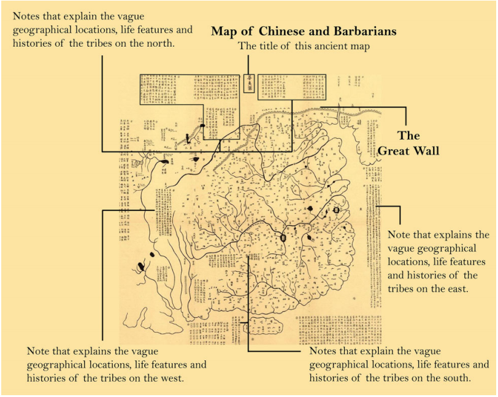
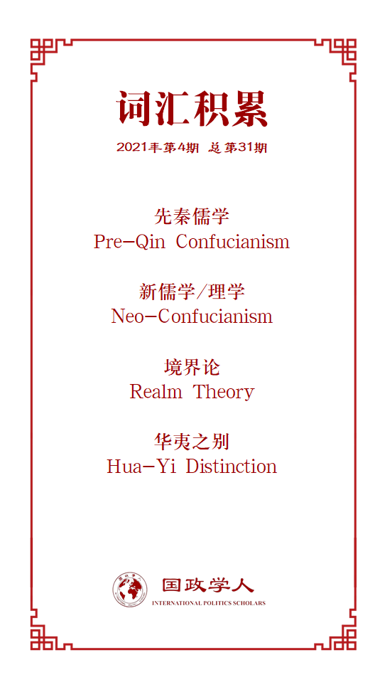

收录于合集 #理论研究 96个

作品简介
【作者】 安宁（广州大学地理科学与遥感学院）主要从事政治地理学、地缘政治学、社会和文化地理学等领域的研究及教学工作；
Jo Sharp（英国格拉斯哥大学地理与地球科学学院）主要从事后殖民主义、地缘政治的批判理论、女性主义等领域的研究及教学工作；
Ian Shaw（英国格拉斯哥大学地理与地球科学学院）主要从事地缘政治学、安全理论、智能战争领域的研究及教学工作。
【编译】 卫艺璇（国政学人编译员，复旦大学国际关系专业博士生）
【校对】 程朵依
【审核】 李博轩
【排版】 余姣
【美编】 游矩家
【来源】 Ning An,Jo Sharp and Ian Shaw (2020) Towards a Confucian geopolitics. Dialogues in Human Geography. https://doi.org/10.1177/2043820620951354
【归档】 《国际关系前沿》2021年第4期，总第31期。
期刊简介
Dialogues in Human Geography 是地理学顶级期刊，该期刊在地理学SSCI期刊中排名第二（2/84），2019年影响因子为10.231，该期刊一年仅有4辑，每辑仅有1-2篇正文。
儒家的地缘政治战略
安宁
Jo Sharp
Ian Shaw
内容提要
本文认为，以现有西方地缘政治理论框架理解中国当今地缘政治战略是不充分的，因此，将儒家哲学引入这一分析框架具有重要意义。本文在回顾并批判性评估儒家思想传统的基础上提出了将儒家哲学与地缘政治杂糅的分析框架（hybrid Confucian geopolitics），并运用该框架分析中国当今地缘政治战略。
文章导读
01
研究背景
近年来，中国日益成为国际政治与国际经济领域的重要玩家，表现为譬如中国积极构建金砖国家合作机制（BRICS）、提出“一带一路”倡议（BRI）、推动发展中非合作论坛（FOCAC）等等。一种常见观点认为，伴随着工业化、市场化和全球化的进程，中国越来越融合于所谓“现代国际体系”（modern international system），在这个过程中中国也对其传统价值观进行了重塑。但中国官方却经常使用儒家观点去解释其战略部署，因此，探索中国儒家文化传统与当今中国地缘战略的关系显得尤为重要。
过往研究对中国地缘战略的研究存在 三种模式 ：意识形态上的“ 资本主义-共产主义 ”（communism- capitalism）二元分析模式；民族主义意义上的“ 中国性-非中国性 ”（Chineseness-non- Chineseness）二元框架模式；以及现实主义中“ 地缘安全-地缘经济 ”（geo-security and geo- economy）的二元分析模式。此外，William Callahan、Jinman Park等学者试图运用传统的“华夷秩序”来分析和解释当前中国的战略选择。比如Jinman Park认为，“ 华夷秩序 ”的历史传统可以解释中国在过去和当前对非洲的经济政策。然而，现有研究基本缺乏对中国地缘政治理论文化基础的分析，这为我们理解中国崛起的地缘政治思想提供了一种重要的视角。
02
儒家思想的演变
“周礼”曾是中国古代周朝社会秩序的基础。周朝末年周天子逐渐衰落，周天子的“天下”分裂为数个小国，各国竞相追求现实主义意义上的军事实力，古代中国迎来了孔子口中“礼崩乐坏”的大动荡时期。在此背景下，孔子极力反对追求军事实力的政治现实主义，倡导恢复以“周礼”为核心的周制。孔子虽然周游列国兜售其儒学思想，但在春秋战国那个大动乱时代，提倡“仁义”“和谐”的儒家思想并未成为主流。这个时代的儒家被称为“先秦儒学”（pre- Qin Confucianism）。此后儒家思想先后经历了两次大变革。
第一次变革发生在汉代。 汉初，在儒生陆贾的游说下，汉朝统治者采纳儒学作为一种维持统治的“帝王之术（imperial art）”，推行“罢黜百家，独尊儒术”的政策，儒家也由此成为了当时的官方意识形态。汉代儒学与先秦儒学的重要区别在于汉代的儒家吸收了道家、法家、阴阳家等学说的思想。此外，先秦儒学仅强调人治的重要性（主要体现为所谓“内圣外王”），汉代儒学则开始出现将政权合法性同神圣的、超自然因素相结合的趋势，某种程度扩大了统治者合法性的基础。
第二次变革出现在唐、宋、明时期。 此次变革的主要背景是以佛教为代表的外来文化对儒家思想社会地位和影响力的巨大冲击，这也推动了这个时期的儒生对儒学进行创新，其成果就是理学（neo- Confucianism）的出现，又称宋明理学。理学的代表是朱熹及其门生。理学构建了一套儒家哲学的本体论——“理气论”，并再次基础上提出“境界论（Realm Theory）”，更强调依靠儒家道德标准进行自身修炼。
虽然历经转变，儒学依然未偏离其基本思想。 第一个基本思想是道德上的能动主义 （moral activism），尤其体现为儒家的义利观，也即如何处理道德与利益的矛盾问题。先秦儒家有言，“君子喻于义，小人喻于利”，也即主张舍弃利而追求义；而此后的儒家则试图统一义与利的矛盾，证明义与利的统一性。如清代儒家颜元所言，“义中之利，君子所贵也”。 第二个基本思想为“内圣外王” ，即认为只有那些具有良好道德品质、达到“圣人”标准的人才有资格参加公共治理，也唯有这个基础上的统治才具有合法性，才能实现所谓“王道”。
03
儒家的地缘政治思想
儒家学说对地理的讨论主要表现为“华夷”的概念。儒家的“ 华夷之别 ”（Hua-Yi distinction）与缘起于西方的“ 东方学 ”（Orientalism）都创造了一种地理上的想象，只是前者创造了一种 中华/汉文化为中心 （Sino-centric/ Han- centric）的地理想象，而后者构建了一种 以西方为中心 （western-centric）的地理想象。
民族因素、政治因素和经济因素都构成了区分“华”与“夷”的重要标准。如“华”更多指汉民族聚居、农耕经济为主、直属中央政府管理的区域，反之“夷”则更多指少数民族聚居、游牧经济为主、不直属于中央政府管理的区域。但文化因素也构成了区分华夷的关键性标准，这里主要是指儒家文化影响力的强弱。尊崇儒家文化即为“华”，反之则为“夷”。根据这种标准，华夷秩序实际上构成了一个松散的中心- 边缘结构体系，“华”与“夷”并不存在一个清晰的边界，“华”与“夷”的身份亦存在流动性与渗透性（fluidity and porosity）。下图为宋代官方所理解的华夷秩序，我们看到“华”的结构是开放且边界不明显的（borderless），除北面的长城构成了一条相对清晰的边界，其余边界都相对模糊。

（公元1136年宋代绘制的描述华夷关系的地图，来源为陕西历史博物馆）
然而，清朝初期满汉矛盾加剧的政治危机逐渐改变了对上述“华夷”秩序的理解。清朝初年，部分汉族人仍使用“夷”的概念来形容作为统治者的满族，顺治到乾隆年间，大批汉族人因此遭灭顶之灾，满汉矛盾由此引发了剧烈的政治危机。作为统治层的满族为缓和满汉矛盾，逐渐开始用“夷”来指代外部国家以转移满汉矛盾（也恰是在这一时期，清朝与外部国家的联系增多）。到了晚清时期，由于中国开始在与“夷”的斗争中节节败退，“洋”的概念开始逐步取代“夷”的概念，华夷二元的结构也因此逐步模糊。
但也正是在晚清时期，部分中国政治家和学者受到西方 民族国家 （nation state）理念的影响试图重塑“华”的含义。梁启超首次提出了“ 中华民族 （the Chinese nation）”的概念，“中华民族”包括中国的 所有民族 （all Chinese ethnicities）。这种华夷观也构成了现代中国理解对外关系的基础。
总的来讲，儒家的地缘政治思想具有两个明显的特点。
其一 ，华夷秩序强调一种 以中华为中心的等级制 （Sino-centric hierarchy）。一开始“华”在文化、物质、政治、社会等多个维度上均被视为优于“夷”，同时“夷”会对“华”进行朝贡。“华”与“夷”的区分标准主要是文化维度的，因此其边界也是相对模糊且灵活的。但在晚清时期，这种中华中心主义在物质、文化、政治等领域遭到西方的巨大冲击，这也是如今“中华民族伟大复兴”的根源。
其二 ，儒家的地缘政治思想在本质上谋求构建一个 和谐的世界秩序 ，而非追求零和的权力斗争。正如赵汀阳所指出的，朝贡更多被视为一种礼仪和表演，而非一种经济上的剥削。儒学家试图向“夷”传播“华”的文化来同化“夷”，也即所谓“以华攘夷，以华变夷，以华治夷”。
04
建国后儒家思想对中国地缘政治战略的影响
历史上儒家思想对中国政治文化产生了深远影响，但近代以来特别是共产主义思想进入中国后，儒家思想的影响力被极大削弱。新中国成立后，儒家对中国地缘政治的影响可划分为两个历史时期：从建国至20世纪70年代为第一个时期，此后至今为第二个时期。
第一个时期 中国地缘政治的特点是深受共产主义意识形态的影响，中国主要的地缘政治战略就是向苏联的“一边倒”。但这一时段后半期受到中苏关系破裂、中国重返联合国等事件的影响，毛泽东于70年代初期提出“三个世界”理论，其本质是跳出冷战的地缘政治逻辑重新思考中国的地缘政治战略。
第二个时期 中国领导人开始选择性、战略性地将儒家思想视为中国地缘政治实践的思想来源。一方面，中国愈发深入地参与国际政治和国际经济体系，接受在世界政治中民族国家这一角色的重要性，传统华夷二分的观念日益模糊。比如“和平共处五项原则”就体现了这一点；另一方面，在这个时期中国也开始积极谋求文化的延续性，试图将儒家传统融入共产主义的政治理想之中。
儒家传统对当今中国内政外交实践的影响都是显著的。在国内治理的实践上儒家传统的影响主要表现为“以德治国”的方针，中国历届领导人先后提出的“社会主义道德建设”、“社会主义荣辱观”和“社会主义核心价值观”无不体现对儒家传统的重视。在外交实践方面，儒家传统的影响主要表现为中国领导人对构建和谐、多级的国际体系的反复强调。中国对非洲的经济政策更是容易让人联想到儒家的义利观。此外，儒家文化遗产也构成了当今中国地缘政治战略的坚实基础。“一带一路”倡议所倡导了“互学、互鉴、互补”的精神在如今民粹主义、排外主义、极右翼势力上扬的时代无疑具有重要的战略文化价值。
当然，中国当代地缘政治话语除了与儒家哲学相结合，也受到了外部地缘政治和地缘经济思想的影响。比如，新自由主义对中国改革开放以及随后的市场化和私有化改革也产生了深远的影响。
05
儒家地缘政治——
一种混合的分析框架
分析当前中国地缘政治绝不能仅仅在传统儒家框架内进行理解，相反我们认为一种较完备的分析框架将是儒家思想与其他社会经济思想的一种杂糅。基于此，我们提出一种“ 混合的儒家地缘政治 （hybrid Confucian geopolitics）”来描述当前中国的地缘政治思想。
这种混合的分析框架一方面承认儒家传统对中国地缘政治从古至今的传承性影响，另一方面也强调每个时代中国的主流意识形态往往是对儒家传统进行选择性吸收以适应变化的局势。也就是说，中国每个时代的地缘政治思想都在承认儒家思想合法性的基础上混合了其他理论，共同构成了某个时代的地缘政治思想。
儒家文化的开放性和包容性是这种混合的儒家地缘战略得以形成的重要原因。自晚清以来，中华文化被外来文化持续不断地影响与挑战，民族主义与国家主义思潮涌入中国，唤醒中华民族抵抗外来压迫。马克思主义思想随后进入中国并成为主流意识形态，深刻地影响着中国政治文化。改革开放后西方政治哲学思潮进入中国，新自由主义在这个时期亦对中国地缘政治产生重要影响。儒家思想是理解中国地缘战略的基础，同时这个基础也是可变的（mutable），不断受到其他理论或思潮的影响。儒家强调和谐、等级与社会秩序，地缘政治则关注地理因素对政治（特别是对暴力冲突）的影响。两者的侧重点看似矛盾，但也正是在这种矛盾中才诞生了新的地缘政治思考。
译者评述
近十年来，国际社会对中国大战略的疑虑是明显上升的，而中国也亟需完善解释自身的话语体系，这正是本文主要的研究背景。本文指出，运用现有西方地缘政治理论解释中国当前地缘政治战略是不充分的，同时鉴于中国官方经常使用儒家话语来描述其对外战略，因此积极挖掘儒家传统中的地缘政治思想并运用于实际分析在理论上和实践上都很有必要。本文在梳理儒家思想发展脉络的基础上分析了儒家传统中包含的主要地缘政治思想，以及新中国成立后儒家思想的对中国地缘政治战略的影响。在最后一节作者提出了一种混合儒家传统与西方地缘政治思想的分析框架，儒家思想的开放性与包容性使这种框架成为可能。在结论中作者指出，中国每个时代的地缘政治思想都是在承认儒家思想合法性的同时受到其他理论思潮的影响下形成的。
译者认为，本文可能的贡献在于提供了一种理解20世纪初以来中国官方意识形态的理论框架，将把握儒家思想作为一条主线，在不同的历史时期又杂糅了具有时代特色的其他理论思潮。而这似乎也正是本文的缺陷所在：什么都能解释意味着什么都不能解释，本文提出的“儒家+其他”的解释框架似乎有把复杂问题简单化的嫌疑。其中又具体表现为三个问题。
其一，作者（们）未能解释儒家如何与其他各类思潮实现了融合，同时也未能指出这种融合在未来是否是可复制、可持续的。其二，作者（们）似乎有意模糊国内治国理政方略与国际谋篇布局战略的区别，毕竟对外战略并不是对内政策的简单延伸。其三，全文隐含了一种“西儒对立”的基本判断，正如本文反复指出，“儒家强调和谐、等级与社会秩序，西方地缘政治则关注暴力与冲突，两者是相互矛盾的话语体系”。而这种解读不得不说具有某种浪漫化倾向，简单地做出西儒对立的判断兴许是值得再推敲的。
词汇整理

文章观点不代表本平台观点，本平台评译分享的文章均出于专业学习之用, 不以任何盈利为目的，内容主要呈现对原文的介绍，原文内容请通过各高校购买的数据库自行下载。
好好学习，天天“在看”
国政学人
支持学术公益与知识传播
微信扫一扫赞赏作者 __赞赏
已喜欢，对作者说句悄悄话
取消 __
发送给作者
发送
最多40字，当前共字
上一页 1/3 下一页
长按二维码向我转账
支持学术公益与知识传播
受苹果公司新规定影响，微信 iOS 版的赞赏功能被关闭，可通过二维码转账支持公众号。